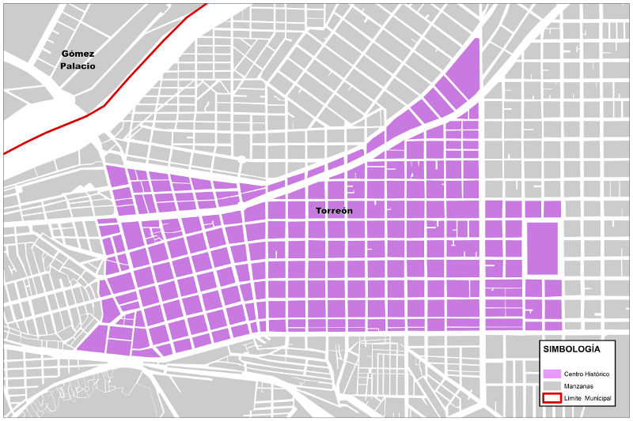

El Centro Histórico de la Ciudad de Torreón es el corazón vivo de nuestra región. La localización de la actividad económica es fundamental para la economía urbana y en el caso del Centro Histórico 39.17% de su superficie está destinada al comercio y servicios con una diversidad de giros y actividades.
Primero es importante delimitar cuál es el área que comprende el Centro Histórico. En noviembre de 1996, por decreto se declaró como "Centro Histórico de la Ciudad de Torreón" a las 241 manzanas contenidas en el perímetro que inicia en la esquina formada por la Avenida Abasolo y Calle Donato Guerra, hacia el poniente hasta la Calzada Colón.
Sigue la Calzada hacia el norte hasta el Boulevard Constitución. Del Boulevard Constitución hacia el poniente hasta la Calle Múzquiz. De la Calle Múzquiz hacia el sur hasta la Prolongación Boulevard Independencia. De la Calle Prolongación Boulevard Independencia hacia el poniente hasta la Calle 5 de mayo. De la Calle 5 de Mayo hacia el sur hasta la calle Torreón Viejo. De la Calle Torreón Viejo hacia el sur-poniente hasta el Boulevard Revolución; y del Boulevard Revolución hacia el oriente hasta la calle Donato Guerra.
De esta forma se cierra el límite del perímetro Centro Histórico, el cual concentra el patrimonio arquitectónico de la ciudad y coincide también con el área comercial por excelencia de Torreón y de la zona conurbada de la Laguna.
Un 19.27 % de la superficie de este sector está dedicada a uso habitacional, un porcentaje que se busca aumentar como parte de las estrategias para densificar a la ciudad. El 10.23 % del suelo se concentra en equipamiento y 24.86% en vialidades. Sólo 2.08% se ocupa en área verde y hay un 2.76% destinado a la industria; de acuerdo con datos la Cámara Nacional de Comercio.

Distribución de negocios
El número de unidades económicas (negocios) que existen actualmente en Torreón es de 27,582 y son 4,392 las que se concentran en el Centro Histórico. Es decir, 15.92%. La actividad económica de este sector de la ciudad podría ser mayor y es parte también de la necesidad existente de darle vida a la zona más histórica de Torreón.
Además es importante identificar el porcentaje de establecimientos que con carácter de semifijos que se concentran en este distrito.
Del total de unidades económicas del centro 3,838 (87.38%) son establecimientos fijos y 554 (12.62%) son establecimientos semifijos, lo que quiere decir que no son negocios formales y tampoco pagan impuestos. Esto lleva a analizar la importancia de contar con mejores estrategias para incentivar el impulso económico de la zona.
Por otra parte, en el Centro Histórico de Torreón en 3,662 (83.37%) de las unidades económicas se ocupan de 0 a 5 personas para su funcionamiento; mientras en 378 (10.32%) unidades económicas se ocupan de 6 a 10 personas.
Ante este panorama es necesario tener en claro los patrones de localización que siguen las actividades económicas, es decir, qué factores determinan que se dé una localización en determinado espacio y no en otro, y así propiciar la diversificación de servicios y actividades urbanas, que tengan compatibilidad con el uso habitacional del sector.
La teoría de los lugares centrales ayuda a explicar dos aspectos interrelacionados del desarrollo urbano: 1) la ubicación de los asentamientos humanos como centros óptimos de distribución para los servicios y ciertas mercancías y, 2) la forma en la cual estos servicios y mercancías se distribuyen dentro del sistema espacial de los lugares urbanos.
En la ciudad encontramos la presencia de centros comerciales y financieros, que “distribuidos" estratégicamente prestan similares servicios. Sin embargo, hay que considerar que no necesariamente tiene que existir un solo centro de negocios en la ciudad. Lo que sí es necesario es devolverle la importancia y valor que le otorga la trascendencia de su patrimonio urbano-arquitectónico al Centro Histórico. Esto se puede lograr realizando acciones de protección, rehabilitación, restauración y conservación de edificios, plazas, parques y espacios públicos que conforman este perímetro.
Superficie del centro ocupada por Uso- Actividad
| USO | Superficie/Hectáreas | Porcentaje |
|---|---|---|
| Comercio y Servicios | 109.06 | 39.17 % |
| Habitación | 53.66 | 19.27 % |
| Equipamiento | 28.48 | 10.23 % |
| Industria | 7.69 | 2.76 % |
| Área verde | 5.79 | 2.08 % |
| Baldíos | 4.55 | 1.63 % |
| Vialidades | 69.23 | 24.86 % |
| Total | 278.46 | 100.00 % |
Unidades económicas en el Centro Histórico
| Localidad | Número de Unidades Económicas | Porcentaje |
|---|---|---|
| Torreón | 27,582 | 100.00 % |
| Centro Histórico | 4,392 | 15.92 % |
| Resto de la ciudad | 23,190 | 84.08 % |
Elaboración propia en base a información INEGI, Directorio Estadístico Nacional de Unidades Económicas.